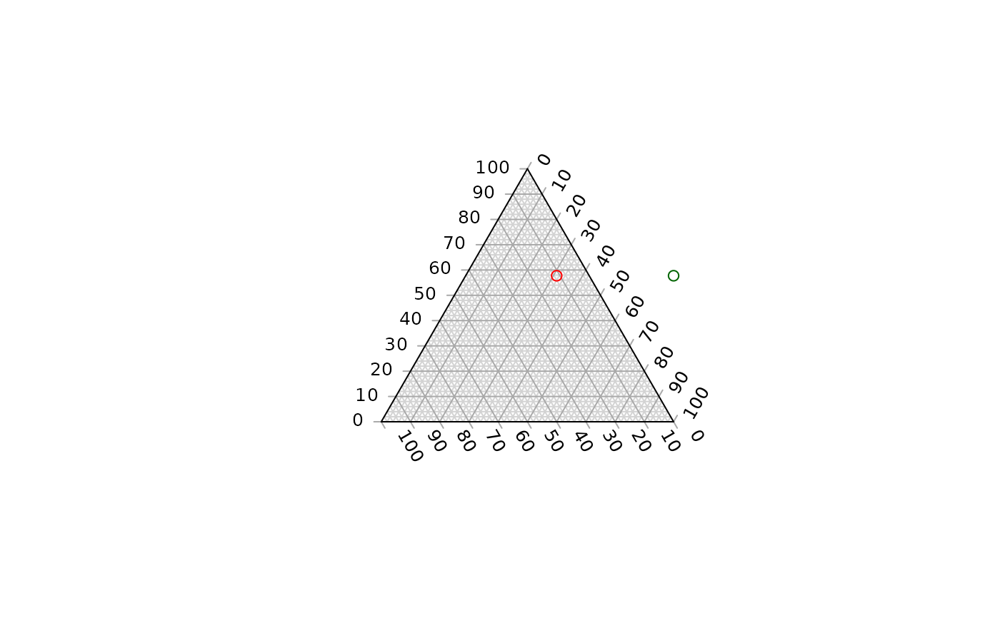

Evaluate whether a given set of coordinates lie outwith the boundaries of a plotted ternary diagram.
Arguments
- x, y
Vectors of x and y coordinates of points.
- tolerance
Consider points this close to the edge of the plot to be inside. Set to negative values to count points that are just outside the plot as inside, and to positive values to count points that are just inside the margins as outside. Maximum positive value: 1/3.
Value
OutsidePlot() returns a logical vector specifying whether each
pair of x and y coordinates corresponds to a point outside the plotted
ternary diagram.
See also
Other plot limits:
TernaryXRange()
Examples
TernaryPlot()
points(0.5, 0.5, col = "darkgreen")
OutsidePlot(0.5, 0.5)
#> [1] TRUE
points(0.1, 0.5, col = "red")

OutsidePlot(0.1, 0.5)
#> [1] FALSE
OutsidePlot(c(0.5, 0.1), 0.5)
#> [1] TRUE FALSE